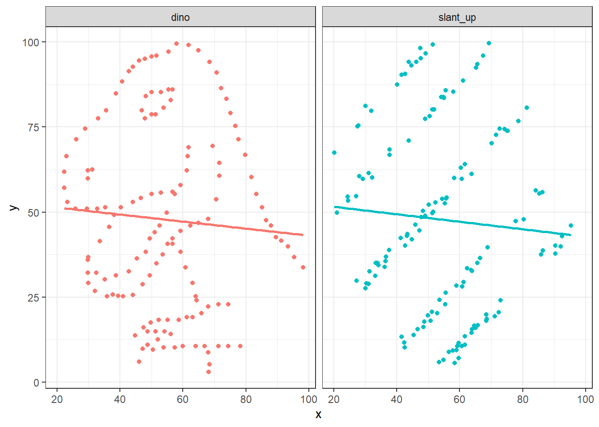

StatKons1: Demo
- Download dieses Demoscript via “</>Code” (oben rechts)
Grundlagen
#lade Daten
# mehr Info darüber: https://cran.r-project.org/web/packages/explore/vignettes/explore_mtcars.html
cars <- mtcars
#neue kategoriale variable
cars <-
as_tibble(cars) |> # da "nur" data frame kann glimplse nichts damit anfangen
mutate(vs_cat = if_else(vs == 0, "normal", "v-type")) |>
mutate(am_cat = if_else(am == 0, "automatic", "manual"))
# betrachte die Daten
summary(cars) mpg cyl disp hp
Min. :10.40 Min. :4.000 Min. : 71.1 Min. : 52.0
1st Qu.:15.43 1st Qu.:4.000 1st Qu.:120.8 1st Qu.: 96.5
Median :19.20 Median :6.000 Median :196.3 Median :123.0
Mean :20.09 Mean :6.188 Mean :230.7 Mean :146.7
3rd Qu.:22.80 3rd Qu.:8.000 3rd Qu.:326.0 3rd Qu.:180.0
Max. :33.90 Max. :8.000 Max. :472.0 Max. :335.0
drat wt qsec vs
Min. :2.760 Min. :1.513 Min. :14.50 Min. :0.0000
1st Qu.:3.080 1st Qu.:2.581 1st Qu.:16.89 1st Qu.:0.0000
Median :3.695 Median :3.325 Median :17.71 Median :0.0000
Mean :3.597 Mean :3.217 Mean :17.85 Mean :0.4375
3rd Qu.:3.920 3rd Qu.:3.610 3rd Qu.:18.90 3rd Qu.:1.0000
Max. :4.930 Max. :5.424 Max. :22.90 Max. :1.0000
am gear carb vs_cat
Min. :0.0000 Min. :3.000 Min. :1.000 Length:32
1st Qu.:0.0000 1st Qu.:3.000 1st Qu.:2.000 Class :character
Median :0.0000 Median :4.000 Median :2.000 Mode :character
Mean :0.4062 Mean :3.688 Mean :2.812
3rd Qu.:1.0000 3rd Qu.:4.000 3rd Qu.:4.000
Max. :1.0000 Max. :5.000 Max. :8.000
am_cat
Length:32
Class :character
Mode :character
glimpse(cars)Rows: 32
Columns: 13
$ mpg <dbl> 21.0, 21.0, 22.8, 21.4, 18.7, 18.1, 14.3, 24.4, 22.8, 19.2, 17.…
$ cyl <dbl> 6, 6, 4, 6, 8, 6, 8, 4, 4, 6, 6, 8, 8, 8, 8, 8, 8, 4, 4, 4, 4, …
$ disp <dbl> 160.0, 160.0, 108.0, 258.0, 360.0, 225.0, 360.0, 146.7, 140.8, …
$ hp <dbl> 110, 110, 93, 110, 175, 105, 245, 62, 95, 123, 123, 180, 180, 1…
$ drat <dbl> 3.90, 3.90, 3.85, 3.08, 3.15, 2.76, 3.21, 3.69, 3.92, 3.92, 3.9…
$ wt <dbl> 2.620, 2.875, 2.320, 3.215, 3.440, 3.460, 3.570, 3.190, 3.150, …
$ qsec <dbl> 16.46, 17.02, 18.61, 19.44, 17.02, 20.22, 15.84, 20.00, 22.90, …
$ vs <dbl> 0, 0, 1, 1, 0, 1, 0, 1, 1, 1, 1, 0, 0, 0, 0, 0, 0, 1, 1, 1, 1, …
$ am <dbl> 1, 1, 1, 0, 0, 0, 0, 0, 0, 0, 0, 0, 0, 0, 0, 0, 0, 1, 1, 1, 0, …
$ gear <dbl> 4, 4, 4, 3, 3, 3, 3, 4, 4, 4, 4, 3, 3, 3, 3, 3, 3, 4, 4, 4, 3, …
$ carb <dbl> 4, 4, 1, 1, 2, 1, 4, 2, 2, 4, 4, 3, 3, 3, 4, 4, 4, 1, 2, 1, 1, …
$ vs_cat <chr> "normal", "normal", "v-type", "v-type", "normal", "v-type", "no…
$ am_cat <chr> "manual", "manual", "manual", "automatic", "automatic", "automa…#Assoziation zwischen Anzahl Zylinder und Motorentyp ()
table(cars$vs_cat, cars$am_cat) # Achtung: sieht aus, als gäbe es weniger V-Motoren bei den handgeschalteten Autos
automatic manual
normal 12 6
v-type 7 7#lass und das überprüfen
#achtung: bei chi-square test kommt es sehr auf das format drauf an (er erwartet entweder vektoren oder eine matrix!)
#exkurs um in es in ein matrix form zu bringen
chi_sq_matrix <- xtabs(~ vs_cat + am_cat, data = as.data.frame(cars)) # in diesem Spezialfall haben wir keine Kriteriumsvariable
#1.version
chi_sq <-chisq.test(chi_sq_matrix)
#2. version
chi_sq <- chisq.test(cars$am_cat, cars$vs_cat)
#resp. fisher exacter test verwenden, da 2x2 table
fisher.test(chi_sq_matrix)
Fisher's Exact Test for Count Data
data: chi_sq_matrix
p-value = 0.4727
alternative hypothesis: true odds ratio is not equal to 1
95 percent confidence interval:
0.3825342 10.5916087
sample estimates:
odds ratio
1.956055 #fisher exakter test
fisher.test(cars$am_cat, cars$vs_cat)
Fisher's Exact Test for Count Data
data: cars$am_cat and cars$vs_cat
p-value = 0.4727
alternative hypothesis: true odds ratio is not equal to 1
95 percent confidence interval:
0.3825342 10.5916087
sample estimates:
odds ratio
1.956055 #visualisieren: kudos goes to https://mgimond.github.io/Stats-in-R/ChiSquare_test.html#3_two_factor_classification
OP <- par(mfrow=c(1,2), "mar"=c(1,1,3,1))
mosaicplot(chi_sq$observed, cex.axis =1 , main = "Observed counts")
mosaicplot(chi_sq$expected, cex.axis =1 , main = "Expected counts\n(if class had no influence)")par(OP)Möglicher Text für Ergebnisse
Der \(\chi^2\)-Test sagt uns, dass das Art des Motors und Art des Fahrwerks statistisch nicht zusammenhängen. Es gibt keine signifikante Unterscheide zwischen den Variablen “VS” und “AM - Transmission” (p = .555). Der Fisher exacter Test bestätigt diesen Befund. Die Odds Ratio (OR) sagt uns hingegen - unter der Prämisse, dass “normale” Motoren eher mit automatischen und V-Motoren eher mit handgeschalteten Fahrwerken ausgestattet sind - dass die Chance doppelt so hoch ist, dass ein Auto mit “normalem” Motor automatisch geschaltet ist, als dies bei einem Auto mit V-Motor der Fall wäre
#define dataset
cars <- mtcars
#neue kategoriale variable
cars <-
as_tibble(cars) |> # da "nur" data frame kann glimplse nichts damit anfangen
mutate(vs_cat = if_else(vs == 0, "normal", "v-type")) |>
mutate(am_cat = if_else(am == 0, "automatic", "manual"))
# bei t-Test immer zuerst visualisieren: in diesem Fall Boxplot mit Variablen Getriebe (v- vs. s-motor) und Anzahl Pferdestärke
ggplot2::ggplot(cars, aes(y = hp, x = vs_cat)) +
stat_boxplot(geom ='errorbar', width = .25) +
geom_boxplot() +
# geom_violin()+
labs(x = "\nBauform Motor", y = "Pferdestärke (PS)\n") +
mytheme#alternativ
boxplot(cars$hp ~ cars$vs_cat) # sieht ganz ok aus, jedoch weist die variable "normale Motoren" deutlich eine grössere Streuung aus -> siehe aov.1 und deren Modelgüte-Plots# Definiere Model: t-Test, wobei die AV metrisch (in unserem Fall eine Zählvariable) sein muss
ttest <- t.test(cars$hp ~ cars$vs_cat)
aov.1 <- aov(cars$hp ~ cars$vs_cat)
#schaue Modellgüte an
par(mfrow = c(2,2))
plot(aov.1)
#zeige resultate
ttest
Welch Two Sample t-test
data: cars$hp by cars$vs_cat
t = 6.2908, df = 23.561, p-value = 1.82e-06
alternative hypothesis: true difference in means between group normal and group v-type is not equal to 0
95 percent confidence interval:
66.06161 130.66854
sample estimates:
mean in group normal mean in group v-type
189.72222 91.35714 summary.lm(aov.1)
Call:
aov(formula = cars$hp ~ cars$vs_cat)
Residuals:
Min 1Q Median 3Q Max
-98.72 -25.61 -4.04 22.55 145.28
Coefficients:
Estimate Std. Error t value Pr(>|t|)
(Intercept) 189.72 11.35 16.720 < 2e-16 ***
cars$vs_catv-type -98.37 17.16 -5.734 2.94e-06 ***
---
Signif. codes: 0 '***' 0.001 '**' 0.01 '*' 0.05 '.' 0.1 ' ' 1
Residual standard error: 48.14 on 30 degrees of freedom
Multiple R-squared: 0.5229, Adjusted R-squared: 0.507
F-statistic: 32.88 on 1 and 30 DF, p-value: 2.941e-06#wie würdet ihr nun die Ergebnisse darstellen?# für mehr infos here: https://cran.r-project.org/web/packages/datasauRus/vignettes/Datasaurus.html
library(datasauRus)
if(requireNamespace("dplyr")){
suppressPackageStartupMessages(library(dplyr))
dt <- datasaurus_dozen |>
group_by(dataset) |>
summarize(
mean_x = mean(x),
mean_y = mean(y),
std_dev_x = sd(x),
std_dev_y = sd(y),
corr_x_y = cor(x, y)
)
}
# check data structure
glimpse(dt)Rows: 13
Columns: 6
$ dataset <chr> "away", "bullseye", "circle", "dino", "dots", "h_lines", "hi…
$ mean_x <dbl> 54.26610, 54.26873, 54.26732, 54.26327, 54.26030, 54.26144, …
$ mean_y <dbl> 47.83472, 47.83082, 47.83772, 47.83225, 47.83983, 47.83025, …
$ std_dev_x <dbl> 16.76982, 16.76924, 16.76001, 16.76514, 16.76774, 16.76590, …
$ std_dev_y <dbl> 26.93974, 26.93573, 26.93004, 26.93540, 26.93019, 26.93988, …
$ corr_x_y <dbl> -0.06412835, -0.06858639, -0.06834336, -0.06447185, -0.06034…# plot two examples
if(requireNamespace("ggplot2")){
library(ggplot2)
dt = filter(datasaurus_dozen, dataset == "dino" | dataset == "slant_up")
ggplot(dt, aes(x=x, y=y, colour=dataset))+
geom_point()+
theme_bw() +
theme(legend.position = "none") +
facet_wrap(~dataset) +
geom_smooth(method = "lm", se = FALSE)
}